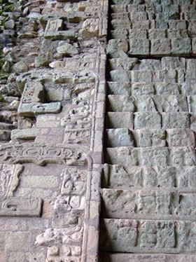
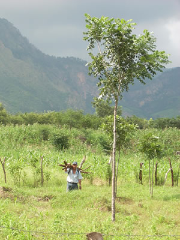

Honduras: un país de gran riqueza ecológica e histórica
Viajar a Honduras, un país situado en pleno Centroamérica, rodeado por Nicaragua, Guatemala y El Salvador, es disfrutar de un viaje de gran calidad. A pesar que su territorio es pequeño, sólo un poco más grande que el estado de Tennessee, en Honduras hay 15 parques nacionales que albergan una rica y variada flora y fauna. Además de esta riqueza ecológica, se añade su riqueza histórica que se puede apreciar tanto en las ruinas mayas de Copán, como en las ciudades coloniales de Tegucigalpa, la capital, y Trujillo en la costa norte.
Copán: Centro cultural del mundo maya
La cultura maya es una de las más poderosas y extraordinarias civilizaciones que se desarrolló en la América Central, extendiéndose geográficamente por México, Guatemala, Belice y Honduras y cronológicamente desde el año 2,000 AC hasta 1,500 DC, justo antes de la llegada de los españoles. Entre sus más grandes logros, además de una monumental arquitectura, destacan el desarrollo de la escritura, del calendario, de las ciencias, como la medicina, por ejemplo, y del arte. En Honduras, uno de los lugares donde se puede apreciar mejor la cultura maya es el Valle de Copán.
El Valle de Copán, situado en la parte occidental de Honduras, es uno de los lugares más visitados por los arqueólogos de todo el mundo. En él se encuentran algunas de las más famosas e impresionantes ruinas mayas, declaradas Patrimonio de la Humanidad en 1980 por la UNESCO. El mejor lugar para admirar la riqueza de la cultura maya es el parque arqueológico de Copán donde se puede admirar maravillosos túneles subterráneos y templos construidos por los mayas, como, por ejemplo, la famosa Escalinata Jeroglífica, construida en honor a la realeza de Copán. Esta escalera contiene el texto más largo que se conserva de la cultura maya. Pero la mejor manera de saber cómo vivieron los habitantes del valle hace más de 3,000 años es visitando las Sepulturas, zona residencial de la élite de Copán. Se llama Sepulturas porque los mayas acostumbraban a enterrar a sus muertos en la misma casa donde vivían.
Ciudades coloniales, riqueza histórica
Además de la influencia de la cultura maya en Honduras también se puede apreciar la influencia de la cultura española. Los españoles llegaron a Honduras hace más de 300 años y las numerosas iglesias repartidas por todo el territorio hondureño recuerdan esa época. Las ciudades Gracias, la Esperanza y Comayagua son algunas de las paradas más interesantes para los visitantes. Pero hay una parada fundamental: Trujillo, construida como la mayoría de las ciudades coloniales, con una plaza central alrededor de la cual se enlazan las calles en forma cuadriculada. Trujillo fue uno de los primeros lugares en América donde llegó Colón quien no tardó en convertirla en un importante centro del continente. Como Trujillo era lugar de paso del oro y la plata del país, pronto captó la atención de los piratas.
Naturaleza abundante 
Si el visitante quiere explorar la selva tropical lluviosa menos explorada del hemisferio norte de América, se puede acercar a «La Moskitia», en la frontera con Nicaragua. Debido a su riquísima flora y fauna «La Moskitia» es uno de los destinos naturales preferidos dentro de Honduras.
Otra ciudad de gran importancia es La Ceiba, la tercera ciudad más grande de Honduras y considerada como la capital del ecoturismo en Centroamérica. Aquí se puede visitar el Refugio de Vida Silvestre de Cuero y Salado y el Parque Nacional Pico Bonito, con diferentes tipos de bosques. En los ríos Zacate y Cangrejal el visitante puede disfrutar del espectáculo natural de las cascadas y practicar rafting.
Guanaja, maravillosa isla caribeña
Para disfrutar del mar Caribe que baña la costa norte de Honduras, lo mejor es ir a alguna de las islas del país. De entre todas las que integran la Bahía, la de Guanaja no le defraudará. A pesar de que los precios son más altos aquí en el resto de las islas, sus aguas transparentes, de intenso azul turquesa, y su arena finísima valen la pena la inversión.
Guanaja es un territorio casi virgen en el que están empezando a alojarse personas famosas que llegan para pasar sus vacaciones. La belleza de sus arrecifes atrae a los amantes del buceo. Pero esté no es el único deporte que se puede practicar en Guanaja: el windsurf, el snorkel y el esquí acuático son otras buenas opciones para entrar en contacto con un mar lleno de vida.
Por supuesto, no se puede ir de Honduras sin visitar la capital, Tegucigalpa, en el sur del país donde iglesias como la de San Miguel Arcángel y la de Los Dolores recuerdan al visitante su pasado colonial. Además, debido a su más de millón y medio de habitantes y a su pujanza económica, Tegucigalpa es el mejor exponente de la modernidad de este país centroamericano.